About Tanzania
About Tanzania Not far from the hot mainland of Africa, near the equator, an island rises from the waters of the Indian Ocean, with its snow-white Arabian palaces, mosques, Indian mansions and sandy beaches above which the palm sway. This is the Zanzibar is traditionally referred to by tourists as the main island of the archipelago of the same name, but the actual name of the island on which Stone City stands is Unguja. We will still use the word "Zanzibar" which has become customary in the Western world to refer to it. where the Stone Town lies, and still holds amazing stories in its narrow little streets. These old walls confided in us some of those stories which we will share with you.
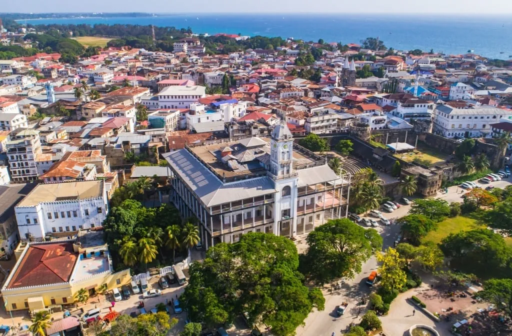
Stone Town: First Impressions
Once you get to Stone town you feel as if you were a time traveler. All around you are the decrepit houses built of coral lime, the fretted doors and balconies seem to carry you away into Arabic or Indian past, and the trade that bustle about you helps to complete the picture of an old-time town. The locals never give away their affinity to XXIst century: they are dressed in plain Muslim attire which remains without change in hot climate for ages. You’re just bound to expect that a caravan of sultan’s men will appear from around the next corner, and following them, a file of slaves will be herded to the slave market jingling their chains.
But then, a quite modern motorbike swooshes through a crossroad, and the spell is broken. You are then beginning to take it in that a shop put in between the fruit store and the gift shop sells laptops, a man wearing a white dishdasha and sitting on the stairs has a cell phone in his hand, and the street boast a garland of wires hanging from the level of the first floor. And you yourself are after all just another one among the tourists roaming in a popular touristic location.
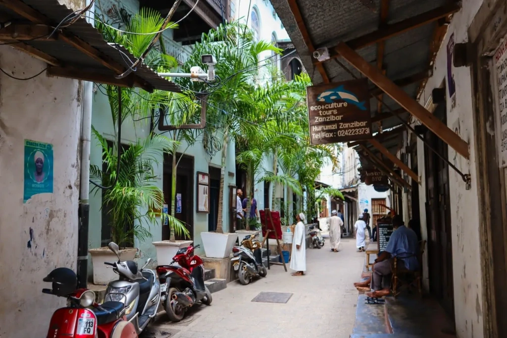
Try coming back there in the evening. It's too hot during the day anyway. The shops will be closes but the inhabitants of these two- and three-story ruins will come out and sit on their doorsteps to socialize and cook their food with smoldering oil. Children will play noisily in these narrow streets, and the magic of the past will work again.
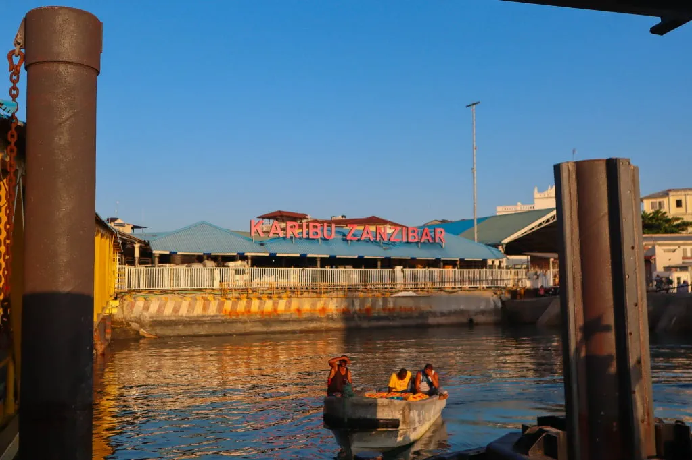
It is not for nothing that Stone Town of Zanzibar is entirely listed as a UNESCO World Heritage Site. It really is very colorful and very old. So old that it is crumbling faster than it can be rebuilt. Those who have not been here should hurry to see this amazing mix of Persian, Arabic, Indian and African cultures. This is not a marketing ploy to lure tourists, but a bit of sad truth about Stone Town. At the moment the famous House of Wonders and the house of the slave trader Tippu Tip are standing demolished. And some of the buildings have been torn down due to dilapidation.
Stone Town: History Standing Still
Now, what is so attractive about the Stone Town of Zanzibar for the tourists? The whole place is merely several streets, so entwined and so narrow that they are only good for pedestrians. All the popular beaches are at the opposite sides of the island: in the east, in the west, in the north, and a handful of those in the south. The western part of the island is densely populated by the locals. Essentially, there is only one town on the entire archipelago composed of 75 islands; the rest is extended hamlets and recreation areas.
To answer the question on the attractiveness of the only Zanzibar town, it is necessary to take it apart layer by layer, like a delicious pie. And in the process, we will discover many interesting things. Thus, come on, real Stone Town, reveal yourself!
The Fishers’ Village of Shangani
By changing the places of 2 and 1 we transfer from the 21st century into 12th century, and there and then we will find a small fishers’ village named Shangani instead of stone Town.
All the buildings here are still one-story, people have never heard of stone walls, they are wooden at best, and the roofs are covered with thatch. But construction was about to begin according to a new technology, the results of which we can observe today.
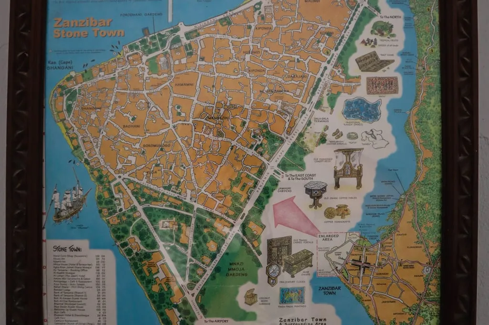
If you can find the island of Zanzibar on the map and then trace the shoreline further down south you will first come across a large Mafia Island, and still further south, a quiet natural harbor where the ocean seems to penetrate the land with its tiny tentacles thus forming a branched aqueous system. There are several islets, among which is the historically significant island of Kilwa. On it once stood the town of Kilwa Kisiwani, of which only ruins now remain, but, for example, in the 14th century travelers described it as one of the most beautiful towns in the world.
There is a legend that the island of Kilwa was bought in the 11th century from the locals by the heir of the ancient Shiraz, a city in Persia which had been expelled by its brothers and had long sailed south in search of a place of refuge. He found it on a well-placed island, built a city on it, and established trade with continental Africa, India, Arabia, and the Persian lands. Let’s leave the legends be for a while, and face the fact that as early as in 12th century the trading town of Kilwa has already become so powerful that it conquered the entire The Swahili coast includes the territories of East Africa along the Indian Ocean, starting from northern Mozambique, through all of Tanzania, and ending with the coast in northern Kenya. It also includes virtually all island groups along this area of the continent, including the Comoros and the Zanzibar Archipelago. The Swahili culture built by natives of Persia, Yemen and Oman on traditional African lands as part of trade relations was consolidated by the formation of a unified Swahili language, as well as common religious and many other cultural practices that later spread deep into East Africa.
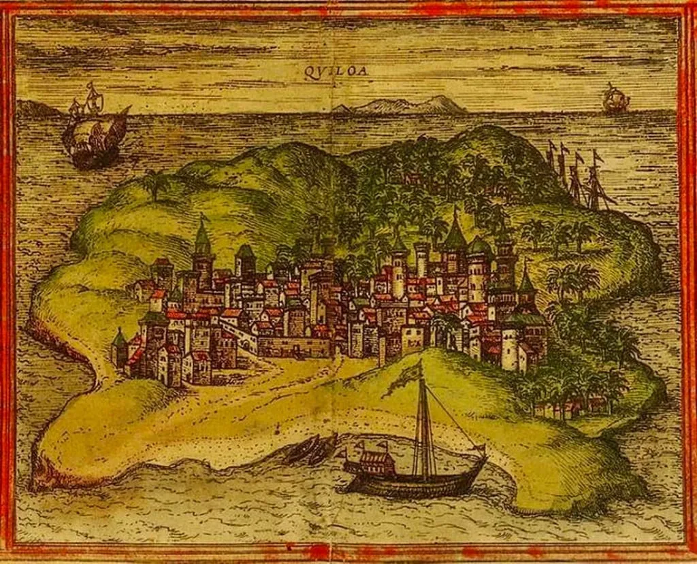
Influence of Kilwa
What is the connection between the ancient Kilwa Kisiwani and the Stone Town of nowadays? It was the Kilwa natives who brought the culture of stone building there. The houses built here before were made of wood, clay and other materials that could not survive through the centuries. Historians believe that people inhabited the island of Zanzibar for many centuries and even millennia before our time. For example, in one of the caves on the island stone tools were recently discovered whose age indicates that people lived here 22,000 years ago.
There are also more recent findings hinting at the activity of ancient trade routes between India and Africa. It is clear that the local population also used the densely populated western shore of the island of Zanzibar, because it, firstly, has a convenient natural harbor and, secondly, is in the least exposed to tides and ebbs which distinguishes it from the rest of the island. But the former civilizations have not preserved their architectural heritage for us.
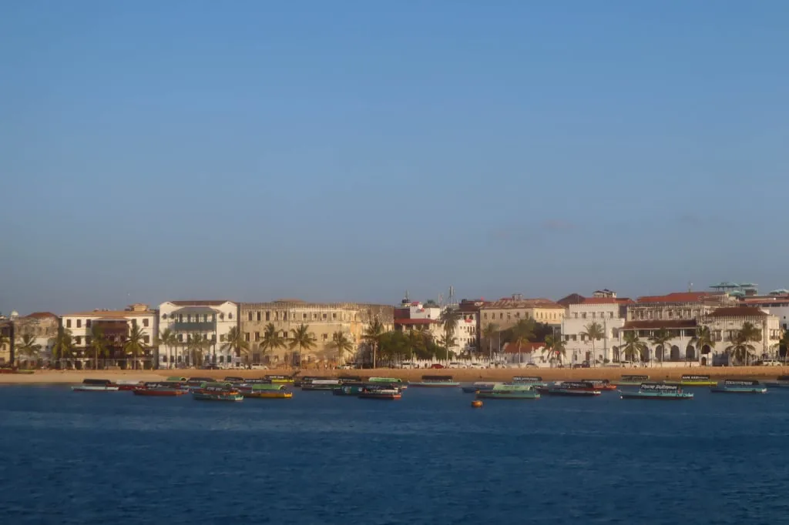
From the late 11th century, traders from Arabia, Persia and India began to settle in Zanzibar. Being the richest members of society they could afford houses made of stone and coral limestone. By the way, it was natives of the Persian Shiraz who built the Kizimkazi Dimbani mosque in the south of Zanzibar which is called the first ever mosque in the southern hemisphere. It subsequently became a model for all other mosques in East Africa. This is how the architectural traditions of the future Stone Town were born.
For about four centuries the Zanzibar village of Shangani grew under the influence of Kilwa, becoming a typical trading port along with Sofala (Mozambique), the settlements on Mafia and Pemba Islands, partly Comoros and trading ports in Madagascar, and the Kenyan city-states of Malindi and Mwita (nowadays Mombasa).
The town grew larger and richer. More and more Yemeni and Persian merchants settled there, as well as traders from India. There was nothing to export from Zanzibar itself at that time, but the port of the ancient Stone Town was convenient as one of the warehouses on the maritime trade route. Gold, ivory, animal hides and other goods were exported from continental Africa. The slave trade also gradually gained momentum: in central and eastern Africa, Arab mercenaries kidnapped people and drove them to the east coast, from where they were shipped as merchandise to Asian countries.
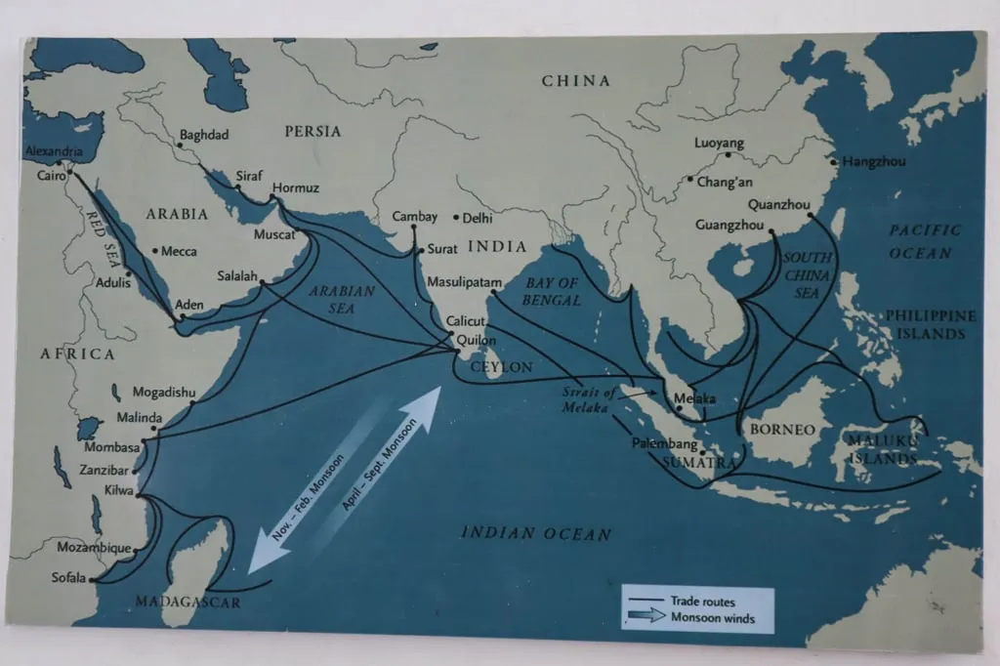
Trade voyages across the Indian Ocean were heavily dependent on the weather, particularly on the monsoons. Shipowners had to wait for seasonal winds which then took them at least six months before they could send a ship laden with goods. Therefore, traders settled in the port cities and town, assimilated with the local population by marrying women from the Zanzibar tribes, acquiring local customs and also sharing their own Muslim traditions, especially the religious worldview and customs, as well as written language and other knowledge. The local merchants actively adopted Arabic practices which made them richer and more influential in their native settlement.
This cultural exchange all along the coast where the city-state of Kilwa planted its sultans as rulers, contributed to the emergence of Swahili culture as we see throughout East Africa centuries later. Thus it went on until the Europeans arrived.
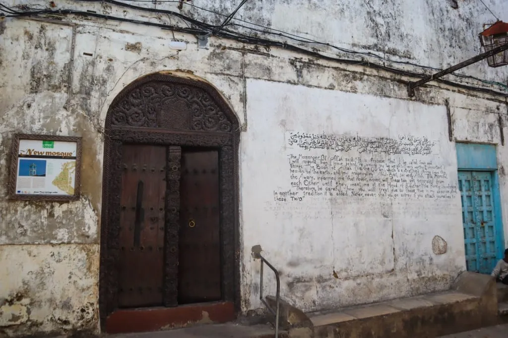
Two “Peaceful” Centuries with the Portuguese
The first European to reach the Sultanate of Kilwa was the Portuguese Pêro da Covilhã. He was a successful scout who traveled through the domains of Kilwa under the guise of an Arab merchant. He was sent by the Portuguese king in search of distant lands from which spices were brought. Portugal knew of existence of the rich India but had no exact maps, much less the idea whether the country could be reached by sea. Pêro da Covilhã did not only find evidence of a sea route to India by skirting Africa from the south, but he also located the sources of the wealth of the mighty Kilwa, including the gold mines of Sofala.
Soon Portuguese ships led by Vasco da Gama arrived. Zanzibar got away with the fact that the Portuguese passed by the island on their way to India and back. But after a few more years, in the early 16th century, a warship approached Zanzibar and its captain threatened the city with war if the local authorities did not submit to Lisbon. So Zanzibar, quietly and peacefully, became part of the Portuguese Empire for almost two centuries.
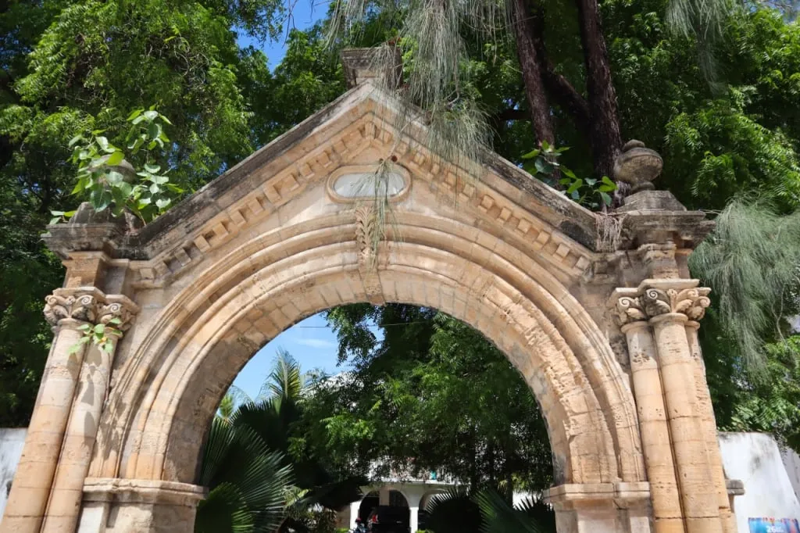
These two centuries went into the history unnoticed; the Portuguese left no significant legacy in Zanzibar and it is difficult to find buildings of that time in the town. There is only one reportedly Portuguese church on the fort and you can still find an ancient stone arch at one of the crossroads. This is in stark contrast to the next, Omani, period in the island's history.
Under the Omani Empire Rule
Stone Town was most influenced by the rule of Oman, another Arab state neighboring Yemen. What we find in Stone Town today was for the most part built during this period. In fact, it was under Arab influence that Zanzibar's main and only city flourished from the late 17th century onward. The flip side of the elite's sprawl and enrichment was the oppression of the poor population, which led to a social explosion. But it is still two and a half centuries away from the settlement in question has become Stone Town.
The Portuguese did not interfere much in the internal affairs of the former Kilwa sultanates. They demanded tribute from them and controlled their own trade routes. Nevertheless, the local Muslim elite, losing income and influence, became increasingly irritated by the presence of the imperialists, and neighboring Mombasa once even massacred the Portuguese. In 1698 the authorities of Zanzibar, conspiring with the unruly Mombasa, invited the Omani nobility to their aid in order to overthrow the European outsiders. Thus began the second era of Arab influence in Zanzibar.
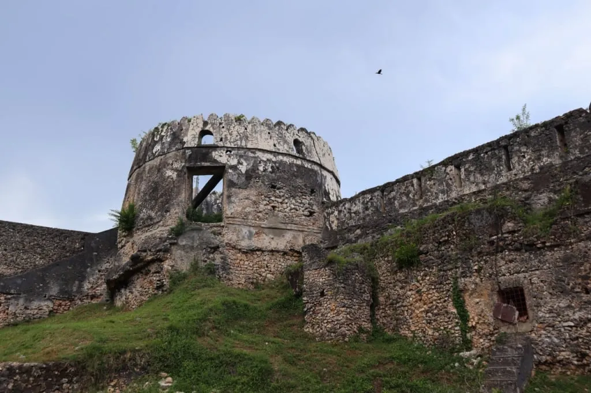
The Omanis started a mighty activity which began with the construction of a large fort. Its surviving fragments remain one of the main landmarks of Stone Town today and are still used even nowadays, but no longer for military purposes. Beginning in the 1830s the town began to actively build up, and now only with stone buildings. A modern building plan was outlined. At the same time the Omani rulers planted numerous cloves plantations on the fertile lands of the island. Since then, Zanzibar became known as the “island of spices”.
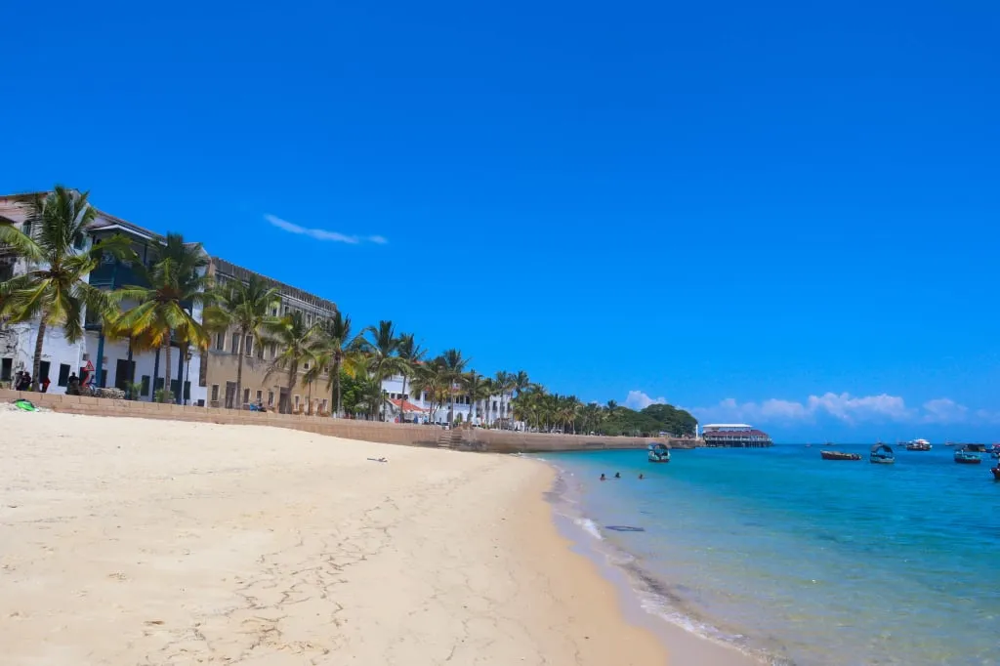
The Omani Empire conquered more and more new territories on the east coast of Africa and north of it, in the Persian Gulf and along its shores. This huge state with its numerous sultanates became the most powerful in Arabia. At one point Zanzibar got the role of its capital - in 1832 the Sultan of Oman moved his residence to Stone Town. Perhaps this was the highest point of success in the history of Stone Town. Luxury palaces began to appear on and around its shores. Today they are the architectural treasure of Zanzibar’s Stone Town. You will surely want to photograph them from afar when you arrive on the island by ferry from Dar es Salaam or by boat to the smaller neighboring islands.
In 1856, due to internal strife in the family of the heirs, there was a split and the empire was divided into two states: the Sultanate of Muscat and Oman and the Sultanate of Zanzibar. Henceforth the island and its adjoining territories were ruled independently of any forces outside Zanzibar. He now had enough resources to pursue his own policies, trade, get rich and expand. Under his rule came the restive Mombasa and the fledgling city of Dar es Salaam on the opposite, continental shore of the Mzizima village, which would become the capital of Tanzania.
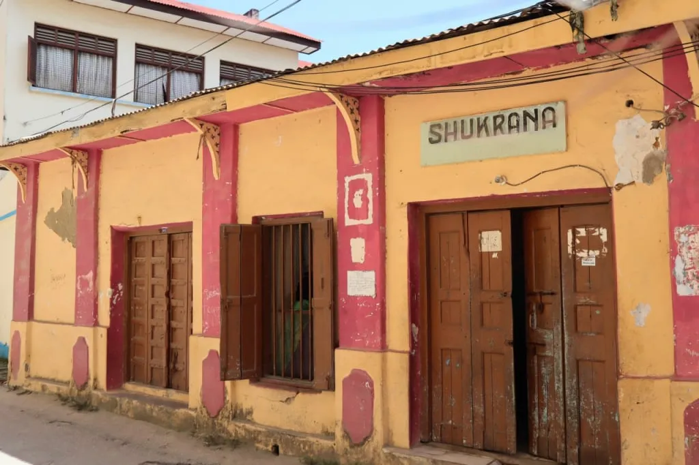
In addition to Arab merchants, Zanzibar also attracted merchants from India. They settled in Stone Town, bringing their own traditions here. Today, experienced travelers notice many similarities between the old Indian cities and Zanzibar: the same narrow streets with houses with tiny stores in the first floors, large and heavy carved doors with spires originally adapted to repel the attacks of fighting elephants, wooden verandas, balconies and frames everywhere decorate the stone houses of the city.
What about Slaves and Arabs?
By that time Stone Town had become the world's premier supplier of slaves from deep Africa. The city was filled with slave markets with dark chambers hidden underground where, in the most horrific conditions, black men, women, and children were “kept” alive: shackled and chained to logs and stone floors. Today, there is only one slave market remains as a monument, it is preserved and turned into a museum. Believe me, the longer you stay in a stuffy cell where you can't even stand up straight, the more depressing the impression it will make on you.
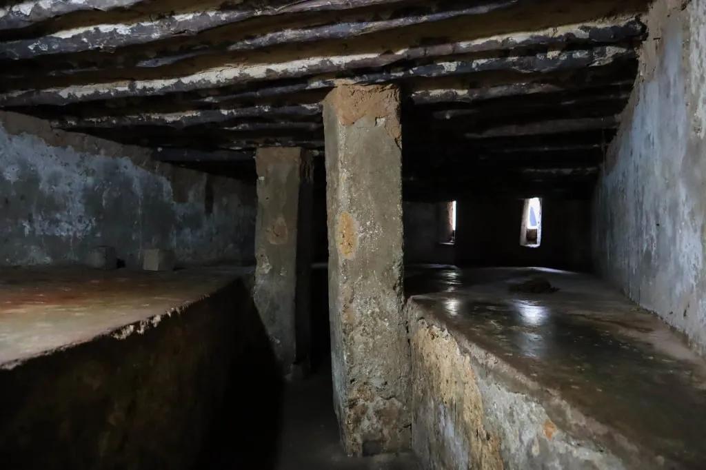
The history of centuries of Arab oppression of Africans is replete with cruel customs of treatment of slaves and leads to a bloody denouement, which is still a century away. In the meantime, people from Central Africa are brought in on fishing dhows, literally cramming every available space with live bodies. In Stone Town, the goods are dumped into "warehouses" -cellars near the slave markets - and the “spoiled goods”, the tortured dead in transit, are simply dumped in a heap on the shore, making the town stink.
Various “samples” of live slave force were taken out into the light, made to look good, and shown to buyers: emaciated black men and women were stripped naked, smeared with coconut oil, and, chained and guarded, made to circle the marketplace and the nearest streets, until someone was interested. Then the buyer would come over, carefully examine the body, look into the mouth, feel the muscles of the men and the breasts of the women, make the slave move around to see if he is maimed, and if he likes the goods, bargain with the seller for a better price. These days there is an evocative monument to this savage tradition outside the old slave market. There is pain in the poses and faces of the shackled men. Linger at the deliberately sunken statue and gaze into the sculptures' eyes. This is one of the rare places in Stone Town where a black page of history is not shamefully and quickly flipped through, only to distract tourists from an easy holiday in sunny Zanzibar.
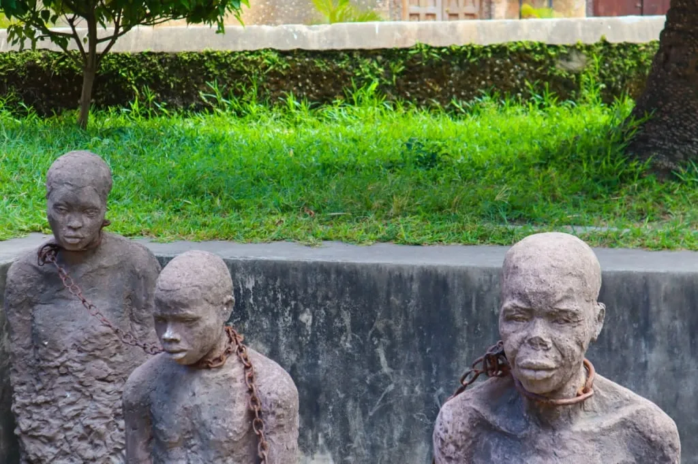
The most famous slave trader in Zanzibar was Tippu Tip who made his fortune in the human trafficking and ivory trade. He sent many thousands of expeditions into the interior parts of Africa, personally leading these huge detachments. Continuing the work of his father and grandfather, Tippu Tip became an influential and very famous merchant not only in his native island, but also in Central Africa, earning the title of governor of one of the districts in Congo. He bought up the villagers from the chiefs for next to nothing and sometimes captured them by force, leading armed bands. He himself said that he was nicknamed “Tippu Tip” because of the sound of rifles that constantly accompanied his campaigns.
Delivering valuable ivory and thousands of black slaves from the Central Africa he brought all his goods to Zanzibar. There he loaded the holds of the merchant ships that left for the East. With the proceeds, Tippu Tip bought up land and established plantations of cloves and other spices where the same slaves toiled in harsh conditions, dying by the dozens on the penal system and being immediately replaced by new batches of blacks. At one point this man who himself was half-African, provided the world with slaves for every taste: hardy men were sold to Arabia, Persia, Oman and Egypt, and from there to Europe and the New World for work requiring physical strength; women were sold as domestic servants, attendants and, of course, concubines; amusing black boys and girls were considered an interesting diversion in many white households.
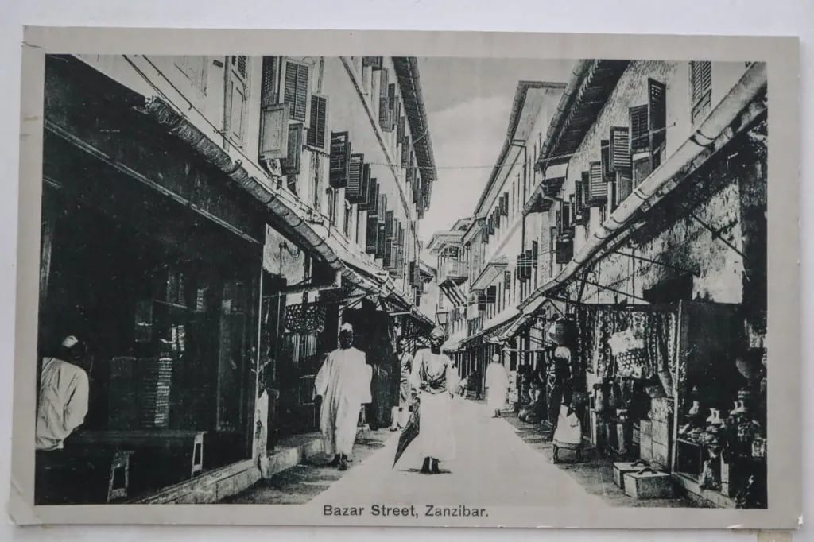
Zanzibar was literally overflowing with slaves. By the middle of the 19th century, there were 360,000 slaves for every 450,000 free people on the island. Why did they not revolt being such a large part of society? The answer lies in the brutal cruelty with which they were treated by their Arab owners. A black slave's life was worth nothing. You could take out your anger on your slave and if you overdid it, you could immediately buy another one cheaply. The bodies of slaves rotted in the streets along with the corpses of stray animals.
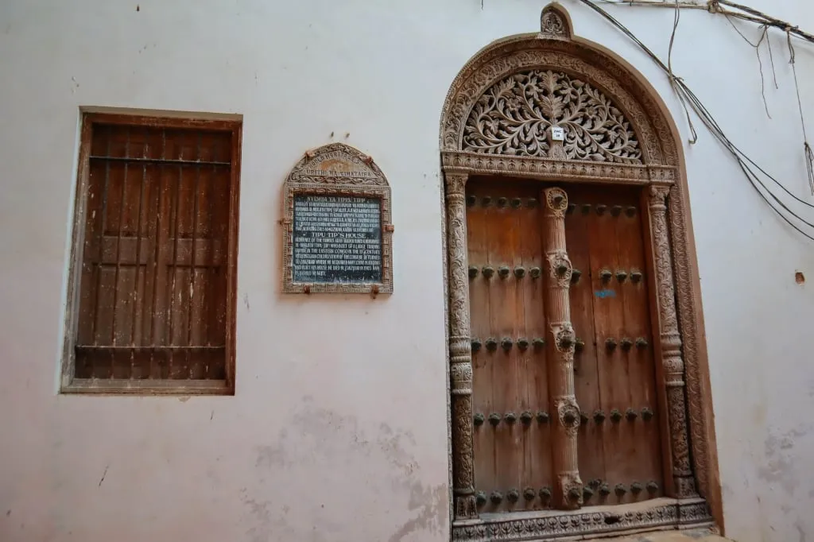
Today you can find the old stone house of a world-famous slave trader in Stone Town. The locals have no kind words to say about him. But as you stand in front of Tippu Tip's house, remember that the man was a controversial figure. He was very educated and intelligent. Before his death, Hamad bin Muhammad bin Jamah bin Rajab bin Muhammad bin Sayyid al-Mughrabi (Tippu Tipa's real name) wrote an account of his life which became the first autobiography in Swahili. During his lifetime he also was granted access to the homes of many Arab nobles and was able to get along with European politicians and African explorers. In his biography there is also such a controversial fragment: remaining the largest slave trader, Tippu Tip helped David Livingstone and Henry Morton Stanley, the most famous British African explorers in Tanzania. By the way David Livingstone was known as a humanist and defender of the continent's black population.
British Patronage over Zanzibar
During the last quarter of the 19th century, Britain's influence on the island increased while the mainland territories fell mainly to Germany that was gaining power. It was the United Kingdom that pressured Zanzibar to end the slave trade. In 1873, the British administration forced the sultan to sign a treaty that prohibited the slave trade threatening to block the island's trade by force, closed all slave markets, and guaranteed full freedom to freed slaves. From that moment on, and for several decades to come, the slave trade remained an illegal business until it ceased to exist as a phenomenon.
On the site of Stone Town's largest slave market, the English erected a majestic cathedral of coral stone as a symbol of mercy that overcame the dark times of human trafficking. The Anglican cathedral represents today a model of British influence on Stone Town architecture. Inside you can find an interesting reference to the fate of the explorer and advocate of indigenous rights in Africa, David Livingstone - to the left of the altar is a small cross made from a special tree. It grew on the very spot where the Scottish traveler's heart was buried.
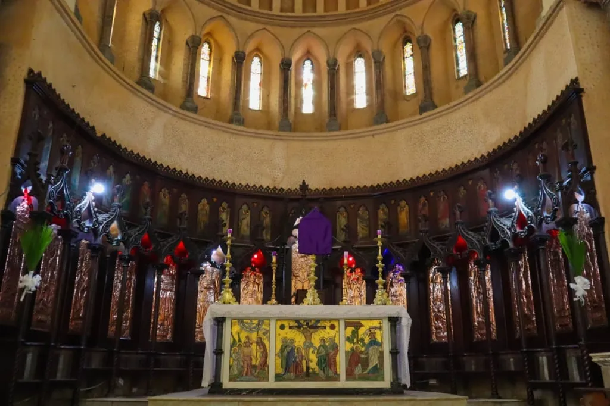
The late 19th century was a time of prolific construction in the city. Many of the buildings from this period remain important landmarks of Stone Town. These include, for example, the Hamamni Persian baths, the famous House of Wonders, which got its name for the first electricity in a house and elevator in Zanzibar, and the beautiful St. Joseph's Cathedral. In the early 20th century the main building of Darajani Market was constructed on the very edge of the old part of the city.
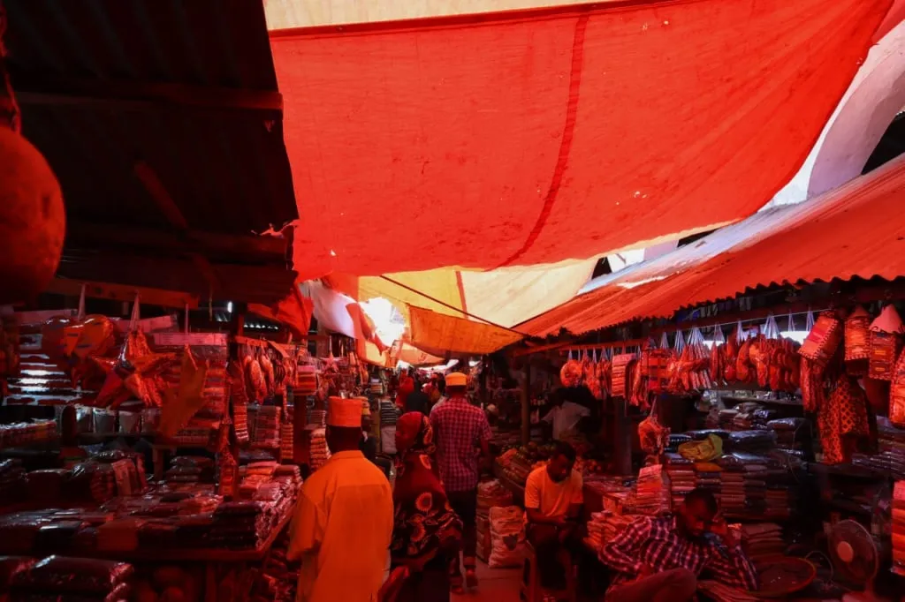
Further events did not help Stone Town to flourish; the age of technology and global warfare was beginning. The big world obsessed with industrial advances and discussions of human rights, no longer needed slaves or bones, much less animal skins. At least not on the scale that it had in previous centuries. World War I deprived Germany of its right to own colonies in Africa. Britain was gaining more and more influence in Zanzibar. It peaked in 1896 with the Anglo-Zanzibar War which went down in history as the shortest war in the world.
The battle took no more than 45 minutes and consisted of the bombardment of the Sultan's palace by British ships and the sinking of the Sultan's yacht. During the skirmish, one British officer was lightly wounded, but about 500 of the Sultan's defenders were killed and he himself fled. From that moment until 1964, only those who were approved by the British government became sultans of Zanzibar.
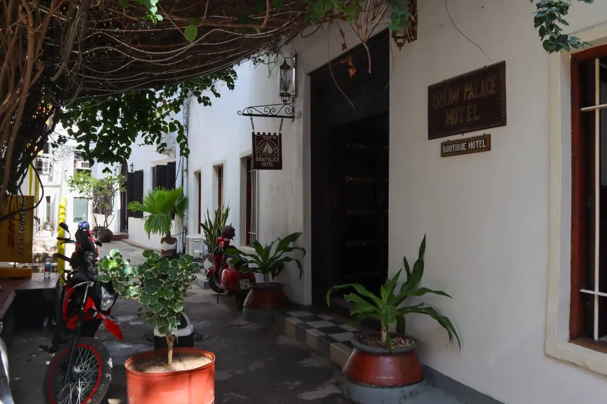
What remains of this period in Stone City's history is the memory of its ennoblement. When the slave trade and later slavery itself were banned, the practice of leaving the bodies of dead black people in the street disappeared. Subsequently, the local population was taught not to pour sewage on sidewalks or dump garbage in alley corners. All this has finally rid Stone Town of the stench that for centuries had created a strong contrast to the outer beauty of the white houses and mosques. The British are also credited with creating the city's sewage system. However, they did not build in the capital of Zanzibar, so the city in the first half of the 20th century was simply preserved as it became in the 19th century.
Long-awaited Independence
By and large, Zanzibar's independence obtained through a bloody coup, did not lead the city to a new prosperity. In the early 1960s, Africa was swept by a wave of continental countries withdrawing from the influence of European states, voluntarily giving up their former colonies. In 1961, neighboring Tanganyika - the mainland of modern-day Tanzania - achieved independence from Great Britain. And since the ties between the two territories have always been strong, the representatives of Tanganyika immediately began to encourage the Zanzibaris to have political freedom as well.
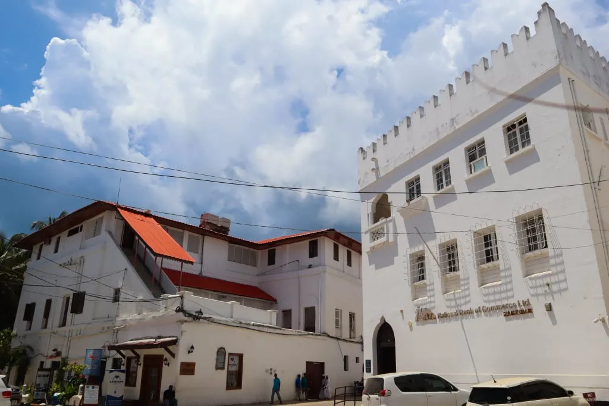
In 1964, a month after Zanzibar signed a treaty with Britain to end patronage, a revolution erupted in Stone Town. The black population, finally feeling the right to live in their own way, revolted against the Arabs who were politically oppressing them. At first it was a well-organized coup. Several hundred rebels led by an energetic fanatic attacked the police stations and having captured their entire arsenal, they seized all the strategic buildings in the city, from the telegraph and the radio station to the airport and the sultan's palace. The Sultan himself with his family and entourage managed to escape at the last minute by sailing away on a royal yacht. The rebels seized power in Zanzibar but they did not stop there and began a brutal massacre.
As they roamed through the city, the rebels killed every Arab and Asian they saw, calling on all the black inhabitants of Zanzibar to do the same. The rage of the Africans which accumulated for centuries, was poured out on the Arabs with fierce force: the streets were littered with mutilated bodies, the Arab houses were robbed systematically and in order, thousands of women were raped that night and the next day, their children were not spared either. The massacre was massive, bloody and uncontrollable. Those who managed to do so fled the island, leaving all their belongings behind.
During those years, a Bulsar family lived on Shangani Street, in the oldest part of Stone Town, and there was a diligent teenager named Farrokh. He would later take the stage name Freddie Mercury and become world famous as the frontman of the band The Queen. And now his family, saving their lives, would leave Zanzibar for good, following the Sultan's family to Great Britain. There is a small Freddie Mercury museum in the house where the Bulsara family lived.
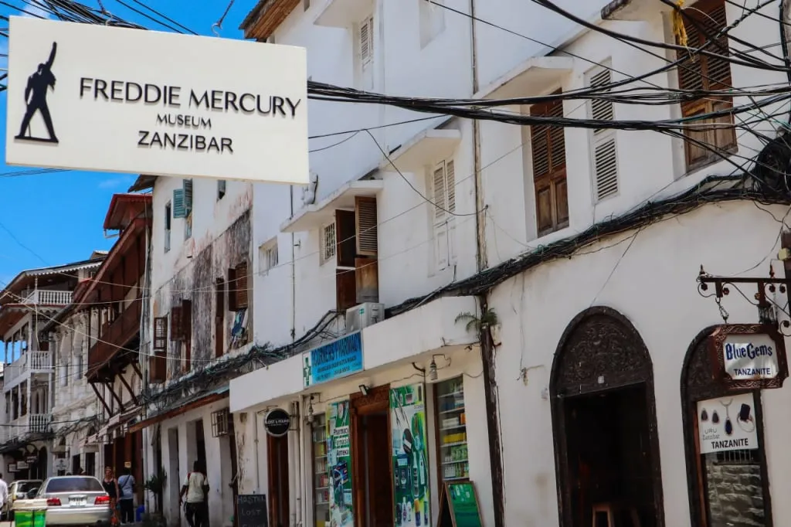
The last Sultan of Zanzibar, like the family of Freddie Mercury, will never return to his native island again. Jamshid ibn Abdullah would live his whole life quietly and discreetly in a small town in the south of England, receiving refusal after refusal in response to his request to return to his historic homeland of Oman. He received this permission only nowadays, in September 2020, at the age of over 90 years old.
Thus Zanzibar became free, throwing off outside influence and beginning a new chapter of its history with independent internal government. The first part of its name, "zan", was given to the newly formed word, which now denotes the modern state of Tanzania, uniting the mainland Tanganyika and the autonomous island Zanzibar.
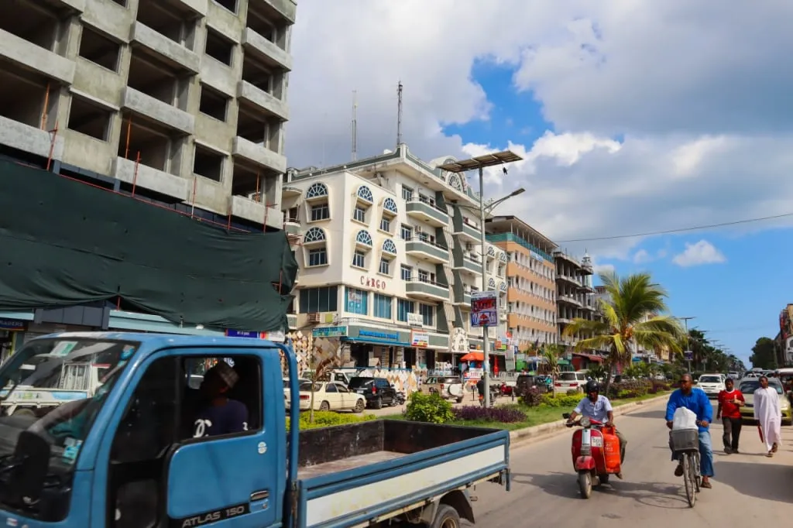
Stone Town was not much affected by these changes. The palaces became museums, the looted Arab houses and Indian stores were used by the local population and the government. The attention of the new authorities, who still called themselves revolutionary for a long time, shifted to the so-called New Town, Ngambo. There, in the vicinity of the old neighborhood, the construction of new modern houses with typical socialist designs began. The new government was in active contact with the USSR, the People’s Republic of China and the German Democratic Republic, and it was the GDR that undertook the project of modern buildings in New Town. Alas, it failed, and today the unpopular apartment buildings in Ngambo act like a shop window decoration only covering the one-story slums, surrounding them by the perimeter.
In the 1980s, the administration of the city of Zanzibar became concerned about the deteriorating condition of the buildings in the historic area. It was decided to start a privatization program so that private owners could restore old buildings and keep them in an acceptable condition. About 300 buildings went into private ownership, but the program was stopped. Today, many buildings continue to deteriorate, most of them are in an emergency condition, threatening residents with collapse.
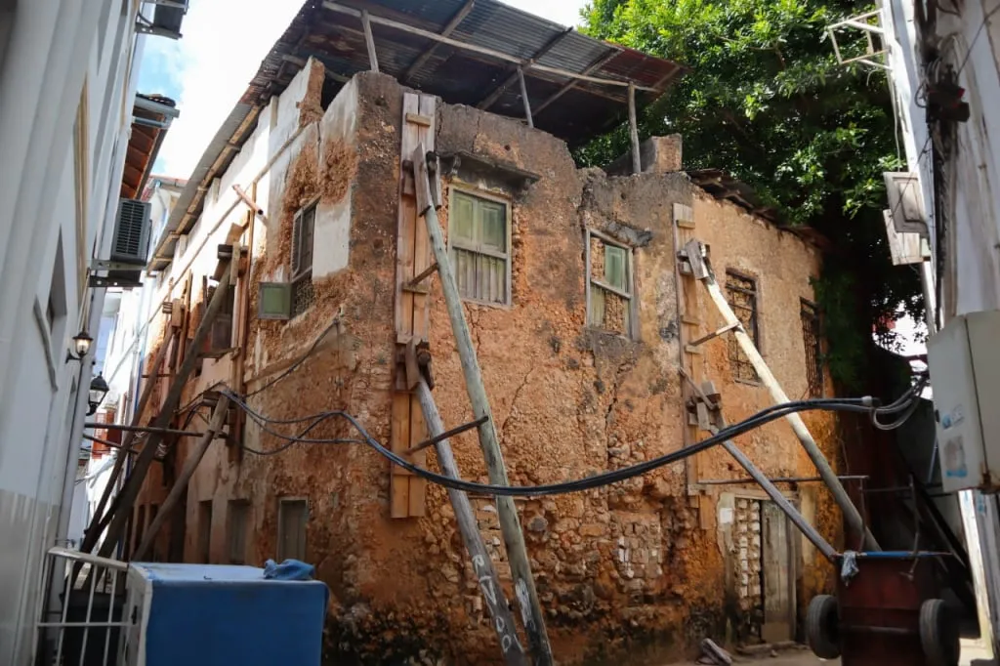
More than a third of the buildings are used commercially as hotels, cafes, stores, and gift shops. Often the owners convert the buildings severely altering the historic structures. And in the homes of the poor, the opposite is true: due to lack of funds, the buildings are not repaired at all and are slowly falling into disrepair. The repair of publicly owned buildings leaves much to be desired - in most cases it is just cosmetic repairs and painting the walls. Stone Town is gradually falling into disrepair. In 2000, to save the situation, the entire Stone Town was included in the UNESCO list of World Heritage Sites. The flow of tourists to Zanzibar has increased considerably and so has the interest in the history of the city.
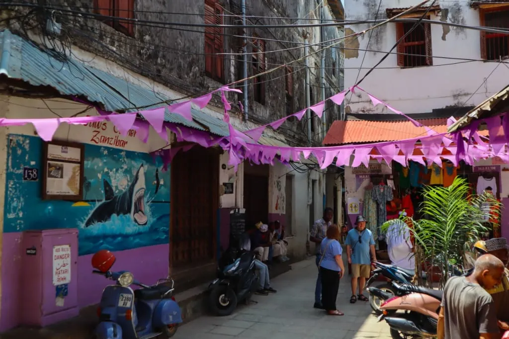
Stone Town, a Labyrinth for the Tourists
Since the 1990s, Stone Town has been actively visited by tourists who come to Zanzibar for relaxing on the beaches. It is ф common practice to set aside a day or two to walk through the maze of narrow streets. Travelers from Europe and the United States may find the houses built with coral stone from the towns in Malta, or Dominican Republic, quite familiar, and the Coral Castle in Florida, USA may also spring to their minds.
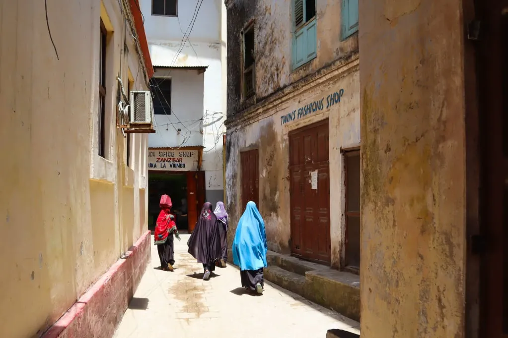
There are about 1700 old buildings in Stone Town. Almost all of them are interesting in their own right, so when you visit this open-air museum, don't neglect to pay attention to any buildings you come across. Look at the patterns on the carved wooden doors, enter museums and examine the interiors, look inside mosques and cathedrals, look for local schools and nicely painted kindergartens, and read signs and other inscriptions on stone walls. In short, go beyond stores and cafes.
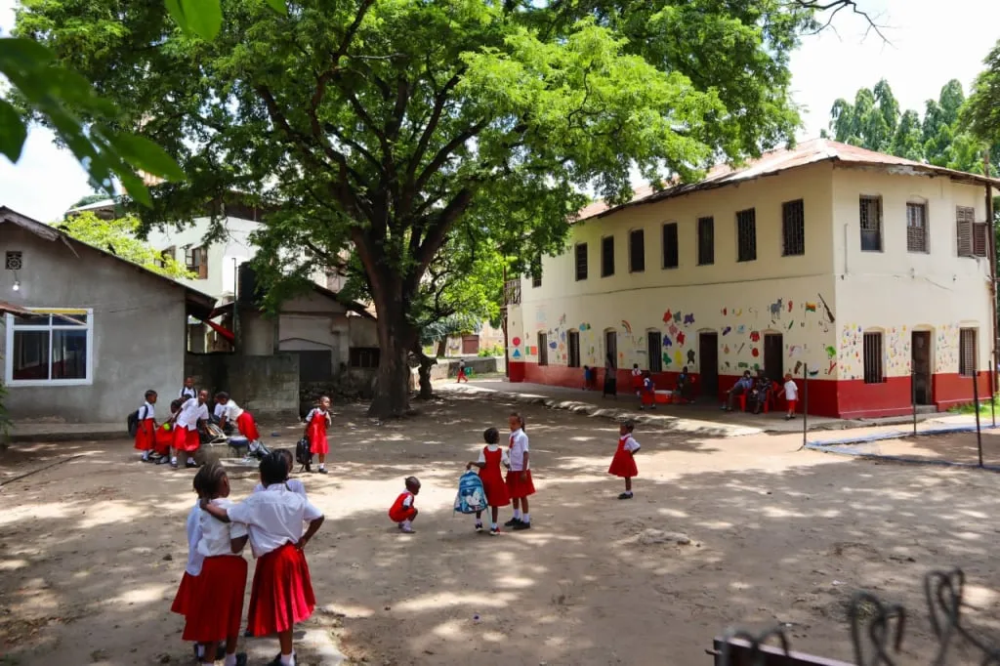
In this article we can not list all of the objects of interest that may be found in Stone Town i, but we will briefly mention some of the most popular attractions. They are definitely worth finding and exploring as you stroll through this amazing Arab-Indian urban maze, now standing on an African island after centuries of complicated and interesting history.
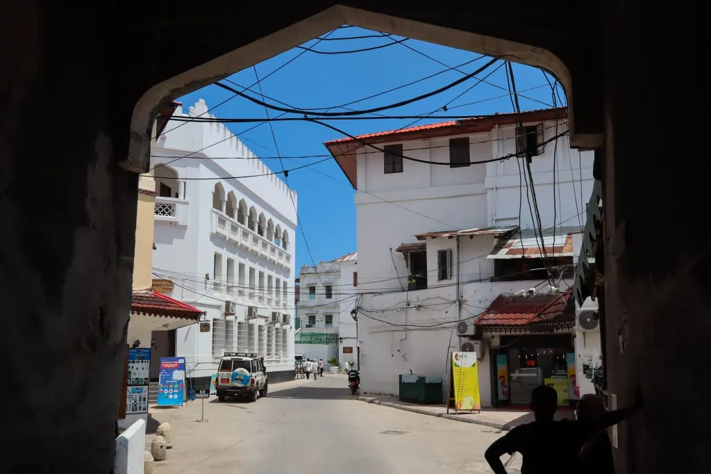
What Is to Look For and to Look At in Stone Town
As you stroll around Stone Town of Zanzibar you can come across the most interesting buildings in the traditional Muslim style. The walk itself is fascinating when you let the streets carry you forward, turning off at intersections in any direction. In fact, there are two ways to walk around Stone Town: by roaming in circles without purpose and just enjoying the special atmosphere of the old town or by following a pre-constructed route. The second method is unlikely to be put into practice without a guide. To enjoy the first method, you must have patience and time if you want to find all the most interesting houses and places that we will list below.
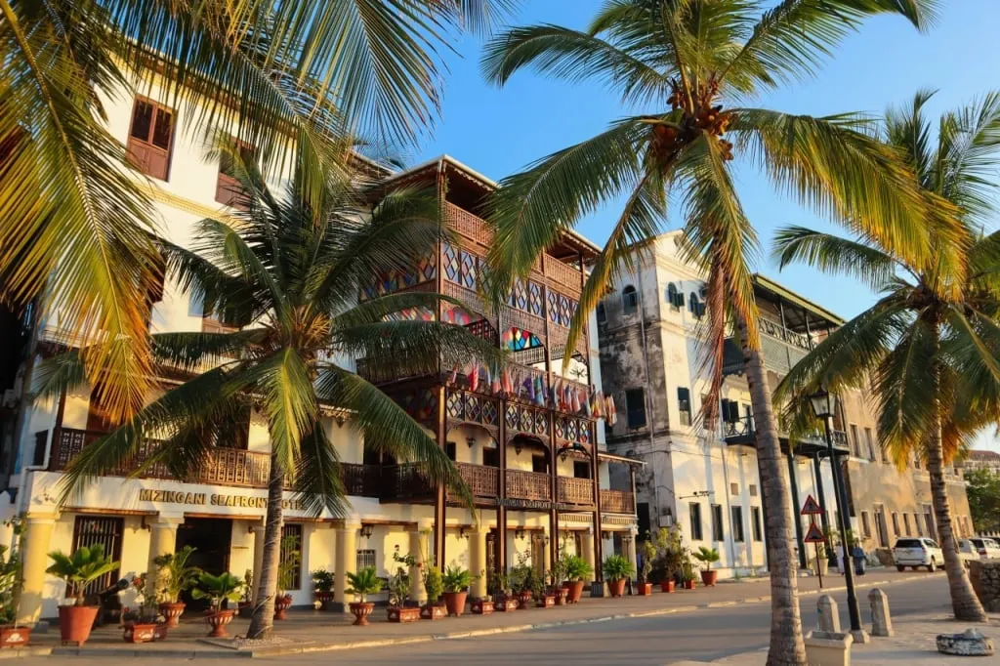
Old dispensary
This is one of the first beautiful buildings you'll encounter if you start your walk from Stone Town's ferry pier. Its airy wood-carved decorations suggest that it belongs to traditional Indian architecture. It has undergone renovations and now looks refreshed. On the gound floor, large historical photographs can be observed on the walls. A tip: Don't waste your time on a paid "tour" of the other floors of the building, there's nothing but views of the old city rooftops which you will see anyway if you visit, for example, the most popular restaurant located on the roof of the Maru Maru Hotel. However, there are other hotels and cafes with rooftop terraces.
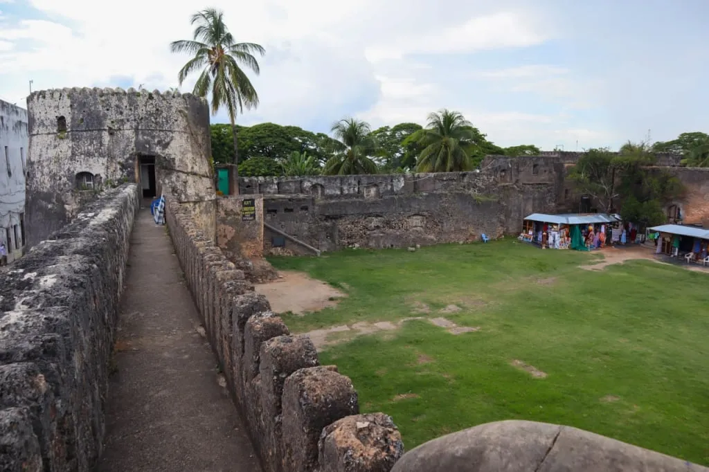
The Palace museum
This large white building three stories high stands on the waterfront and attracts many tourists. It is the central museum of Stone Town, the former palace of the sultan. The exhibits on display show the life history of the sultan's family. A separate floor is dedicated to the famous Princess Sayyida Salma, known in Europe as Emily Ruete. A well-educated daughter of a Zanzibar sultan, she lived a complicated but interesting life, escaping to Germany and taking a new name. Her book titled Memories of an Arab Princess from Zanzibar, was not only a confession, but also the first autobiography of an Arab woman. By the way, in Stone Town there are other attractions associated with the life of this extraordinary person. For example, there is a separate museum of Princess Salma, which is supervised by a competent and enthusiastic local historian, who arranges for those who wish to tour the places marked in the biography of the Sultan's daughter.
House of Wonders
Farther along the waterfront is Stone Town's tallest building, the House of Wonders. In 1883, when it was completed, this palace was the first building in Zanzibar with electricity and it also had an elevator, a true miracle for 19th-century Africa. Hence the name of the sultan's palace. Its fate is not a fortunate one. During the Anglo-Zanzibar War the building was partially damaged. In our time, when a museum was already working there, the restored palace began to crumble, losing whole fragments of the roof and porches. When extensive restoration work was done in 2020, the building partially collapsed and workers were killed. Now the House of Wonders is closed for extensive renovation, its facade unsightly obscured by huge sheets of metal. Once it is restored, it will have been another miracle for Zanzibar.
The Old Fort
The Arab fort is visible from afar because of its high walls and towers in the corners. It is open to all visitors and inside you can find an amphitheater in one part and a large green meadow in the other. You can walk around the top of the wall if you go up through one of the towers, which houses an art gallery. Inside the fort there are souvenir shops, sometimes there are musical performances and even festivals. Nothing reminds of the past associated with the barracks and prison today.
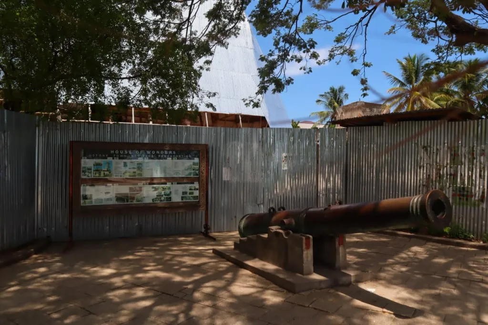
Forodhani Gardens
In front of the fort on the waterfront there is a square where you can stroll, admire the many boats moored along the shore, and practice the art of communication with street vendors and other catcallers. There's also a playground. If there's anywhere to meet sunsets, it's on the promenade by Forodhani Park. In the evenings, the street kitchen starts working: dozens of chefs prepare traditional Zanzibari food which attracts tourists costs more than usual, but due to the atmosphere creates a sense of celebration. It is like a kind of national fair, somewhat reminiscent of the Christmas square fairs of Europe.
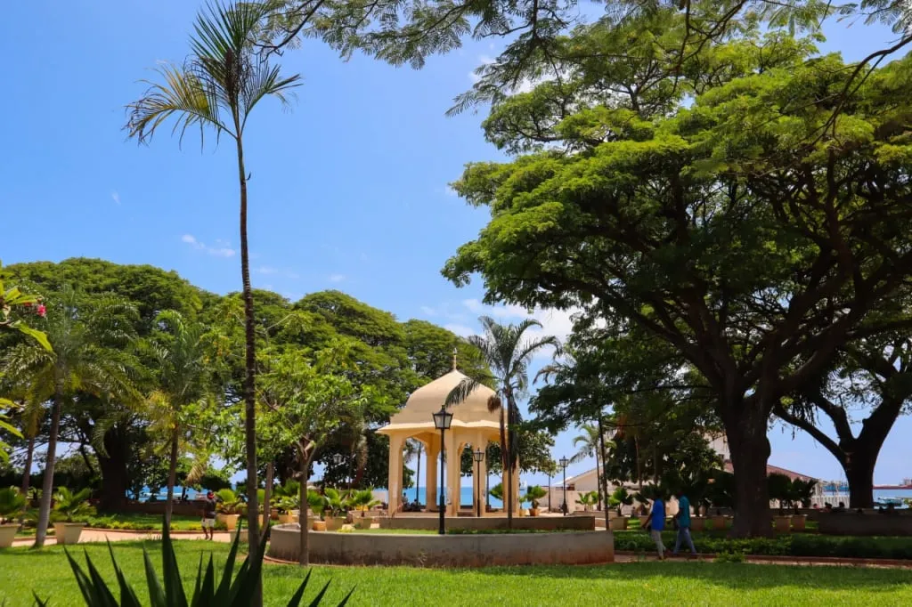
Shangani Street
If you walk forward to Shangani Street, you will find a building with a museum of Zanzibar's most famous native. Locals will tell you where it is, but not many people know about Freddie Mercury himself. The musician's artistry and bisexuality scare off residents of the Muslim autonomy; he is not considered popular in his homeland. The exhibition is located in the very house where the family of the future frontman of The Queen lived in the last years before the revolution. The museum emphasizes that the permanent exhibition is devoted exclusively to the creative work of the world-famous singer. Read our article about what you can see in the museum, with unique photos which we were kindly allowed to make specially for the exclusive material of Angelino Adventures.
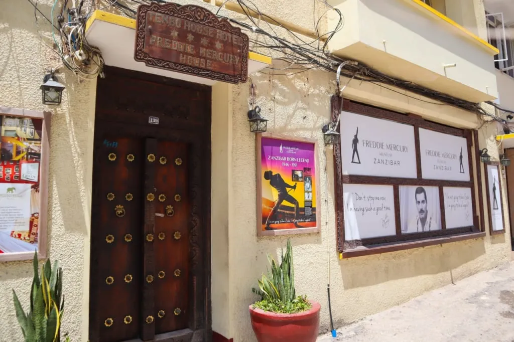
Tippu Tip’s house
This is perhaps Stone Town's most mysterious house. The building is currently under long-term renovation, so it won't be easy to find. Regularly it's also a difficult task, because the famous slave trader's house is not a museum, and the locals not only don't know where it is, but don't even want to remember it. You will have to try hard to find first the alley with the ominous name of Suicide Alley, and then the building itself. On one of the walls hangs a plaque with its short history.
St. Joseph’s Cathedral
It is one of the most noticeable, tallest and most beautiful buildings in Stone Town. Its two spires rise above the roofs of the old city, creating an echo with the towers of the minarets. To see the cathedral from afar is easier than to walk to it through the streets: their narrow passages first hide the beautiful towers of the Roman Catholic cathedral from you, and when it suddenly appears right in front of you, do not allow you to properly photograph this wonderful building. It was built by the French, and it may be the most graceful structure in all of Stone Town.
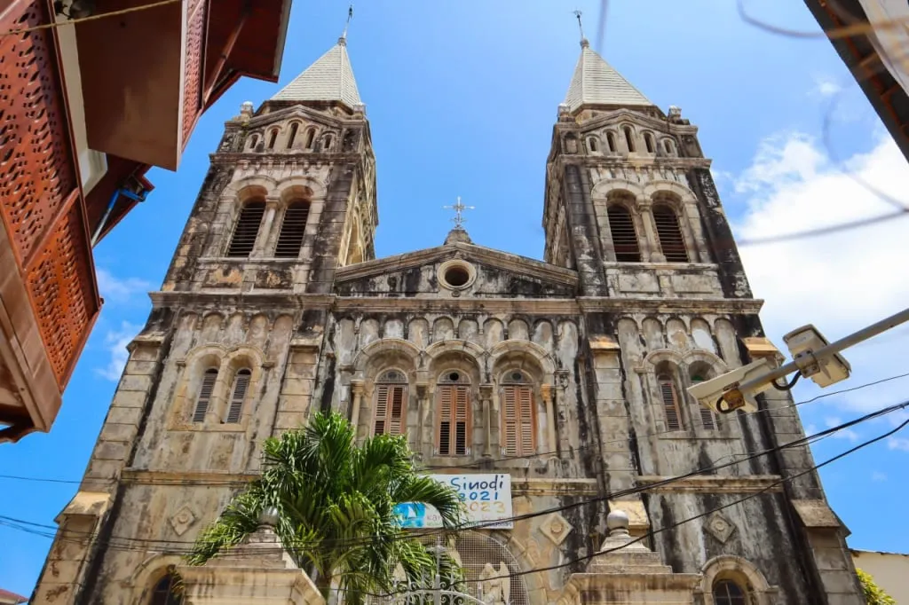
Hamamni Persian Baths
It was once the first public bath in the city, but today part of the building is open to tourists. The building was designed by Shirazi architects, and today it is interesting to look at the traditional interiors of Persian baths. By the way, north of Zanzibar there are remains of other Persian baths, Kidichi. One of the sultans built them for his wife. But only a part of the complex survived, and now Kidichi is of interest only to those who like ruins (not far from Kidichi there are also the ruins of the palace Mtoni). But the Hamamni baths are in the heart of the Stone City.
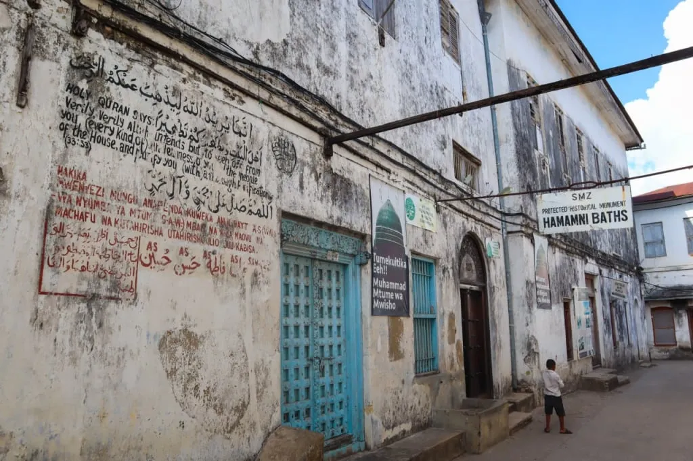
Christ Church
The Anglican cathedral rises on the old square where the largest slave market used to be. This beautiful Gothic building of noble brown hues is not to be missed. You are likely to visit it as part of a tour of places that showcase the slave-owning past. The cathedral is worth enjoying visually, both from the outside and the inside. Note the columns in front of the entrance under the main vault. Their location is an interesting attention check for visitors. It is said that where the altar is now located, there used to be a pillar to which slaves were chained to be flogged.
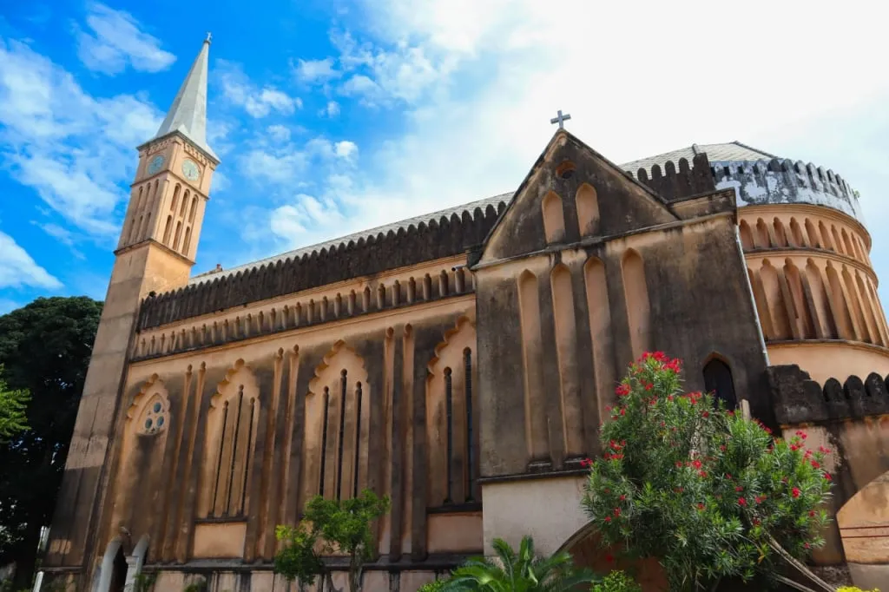
Next to the cathedral on some recess is a monument made up of five figures of chained black men and women. Nearby, in a separate building, is the Slave Trade Museum. In its basement, two small cells have been preserved where several dozen slaves were held at one time: in one cell shackled men, in the other - women and children. Dark rooms with a couple of tiny windows under the low ceiling, concrete floors and walls, musty air, places where people ready for sale in chains could only squat - this place leaves a heavy impression. The other ten-odd cells have not survived.
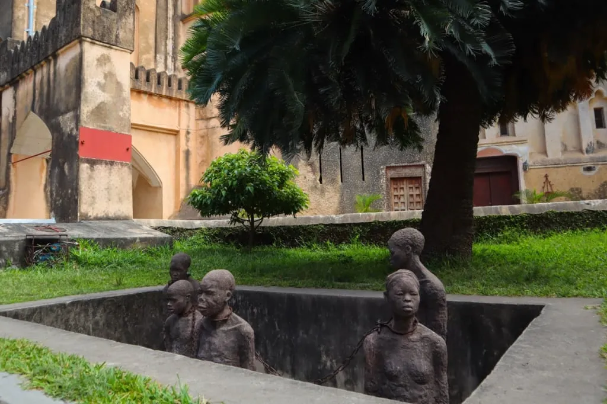
Darajani Market
Not far from Christ Church is the main market of Stone Town. The main building was constructed in the early 20th century. But trade also takes place in the surrounding streets. If you don't mind the strong smells (it's mostly a food market), drop in here, walk the rows, and maybe you'll find something to buy. The bazaar is on the very edge of Stone Town. On the other side of the road that separates the old part of town from the new is the non-food market, but this is another part of Zanzibar City.
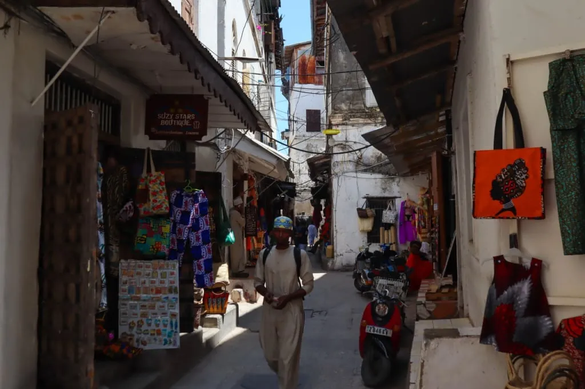
There are other noteworthy places in the old town, but we suggest you find them on your own during your leisurely strolls through the ancient streets of island Africa.
What Else Is Worth Visiting in Zanzibar and Tanzania
For the sake of interest, you can also go to the new part of town, but only if you want to see how the contemporary Zanzibarians live. There are other sultan's palaces near the town besides those mentioned. In the interior of the island is the Jozani Forest National Wildlife Refuge, whose forests are home to several animals including the endemic Kirk's colobus monkeys. This excursion can be combined with a visit to a nearby tropical butterfly park.
If you are interested in learning about the period of the slave trade when it was already forbidden and became illegal, you can take a cab and a guide to Mangapwani to go down to the caves where slaves brought from the Bagamoyo mainland were secretly kept. Mangapwani is located north of Stone Town.
Of course, it is worth visiting the spice plantations where guided tours are organized. There you can not only see how spices are grown, which gave the island its second unofficial name, but also buy some for yourself so that later you can cook food at home with the spicy flavor of Zanzibar.
Beach, diving and kitesurfing enthusiasts can explore the different beaches of the island: they are located almost all around the perimeter of Zanzibar. The northern beaches are considered the best and most expensive because of the lowest tides. You can dive and see the underwater world near the tiny island of Mnemba, northeast of Zanzibar.
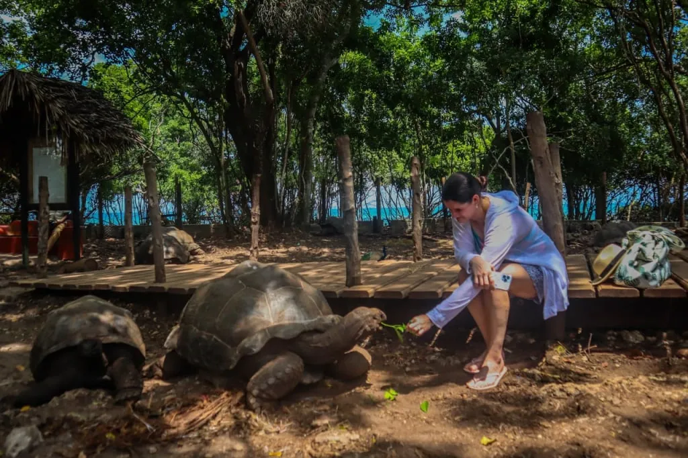
A trip to the famous Giant Tortoise Island (also known as Changuu Island, or Prison Island) also promises to be interesting. This is not just a name: the small park on the island is really home to century-old turtles up to one and a half meters (5 feet) in height. The island is also called Prison Island because of the building that was built to hold repeat offenders but was never used for its intended purpose.
In addition to Zanzibar, you can also explore the larger islands of the archipelago, such as Pemba and Mafia. Both islands are famous for their colorful underwater flora, corals and a variety of fish and other inhabitants of the Indian Ocean, which is so appreciated by scuba diving enthusiasts. Our article on the islands of Tanzania will help you choose which islands to visit.
From Stone Town, you can also take a ferry to the mainland and in an hour and a half you will have a chance to explore Dar es Salaam, Tanzania's largest city and the most populated metropolis in East Africa. If you have time, you can get out of Dar es Salaam with an excursion to Bagamoyo, where ships carrying ivory and slaves departed for Zanzibar. Near this town are the ruins of ancient Kaole. If you drive south from Dar es Salaam, you can reach the islands of Kilwa Kisiwani and Songo Mnara, which together make up one UNESCO site. Today, both islands contain the ruins of ancient cities that once marked the beginning of the history of the Swahili coast.
For those who want to learn more about mainland Africa and get closer to the places where elephants roam, whose tusks were once hunted by humans, we recommend exploring safari tours programs that include visits to such legendary places as Ngorongoro and Serengeti. Today's Stone Town is just an echo from Africa's past. To get close to the essence of the black continent, you need to get close to its heart. However, you can also stay in Stone Town, strolling through the old streets that preserve the memory of this unique place's past over and over again.
When Is It Best to go to Zanzibar
Climate of Zanzibar makes it possible to visit Stone Town almost all year round. It is believed that there are two rainy seasons, in March till May and in November till December. The climate has changed a lot in recent years, so no one really guarantees the rains, and their duration is an arbitrary. The average temperature does not drop below 20 °C (68 °F) throughout the year. But keep in mind that Stone Town is a “bag of rocks” which is almost always stuffy and hot. Also, you won't find any shade in its streets during hours when the sun is high. Stock up on drinking water, hats, long-sleeved clothing, and sunscreen before your walks.
Also keep in mind that almost the entire population of Stone Town is religious, and we are talking about Islam. Plan your closet according to the recommendations for tourists traveling to Muslim countries. And check the calendar before you buy your tickets to account for the long Muslim holidays, especially the holy month of Ramadan. During these periods, many cafes and restaurants, as well as local stores may not work at all or work only in the evening hours. And there is no way to eat on the go during the day due to the rules of etiquette.
All content on Angelino Adventures is created with expert insights and thorough research, in line with our Editorial Policy.


Want to know more about Tanzania adventures?
Get in touch with our team! We've explored all the top destinations across Tanzania. Our Kilimanjaro-based adventure consultants are ready to share tips and help you plan your unforgettable journey.
 Tanzania Safaris
Tanzania Safaris
 Kilimanjaro and other mountains
Kilimanjaro and other mountains
 About Angelino Adventures
About Angelino Adventures
 Tanzania Islands
Tanzania Islands